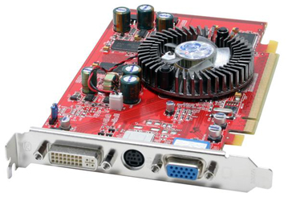

Actividad
Por controlador o driver entendemos aquel software o programa informático preciso para el correcto funcionamiento de alguno de los componentes del hardware nuestro ordenador.
|  |
| Imagen 48. nitronet. Copyright |
Sin embargo, aunque los controladores de sistemas operativos como Windows 7 presentan las suficientes garantías de eficiencia, el máximo provecho de cada uno de los dispositivos que conforman el equipo sólo se puede asegurar instalando el controlador específico diseñado por su fabricante.
Al igual que ocurre con cualquier otro programa, los controladores
tienen que ser compatibles con el sistema operativo. De este modo, una
misma tarjeta de vídeo tendrá un driver para el supuesto de que el
sistema operativo sea Windows XP, otro diferente para Windows 7 y
otro diferente para Linux. Por esta circunstancia, y debido a la
diversidad y volatilidad de la vigencia de los sistemas operativos, las
compañías comercializadoras del hardware suelen poner a disposición de
los usuarios, controladores actualizados y adaptados a los distintos
sistemas operativos. La manera más habitual de obtener estos drivers es
a través de Internet, en los sitios web de las empresas fabricantes.
Una vez que se accede al espacio web de la compañía, en la zona de
productos o descargas (download) bastará con indicar el tipo, nombre y
versión del dispositivo para el que buscamos el controlador, así como
el sistema operativo en el que habrá de funcionar e iniciar la
transmisión del fichero hacia nuestro ordenador.
Entre los componentes de un ordenador que más frecuentemente van a requerir un driver específico para su correcto funcionamiento tenemos:
Al igual que ocurre con el resto de aplicaciones, la utilización de estos programas va precedida de un proceso de instalación en el ordenador en que se van a ser utilizados.